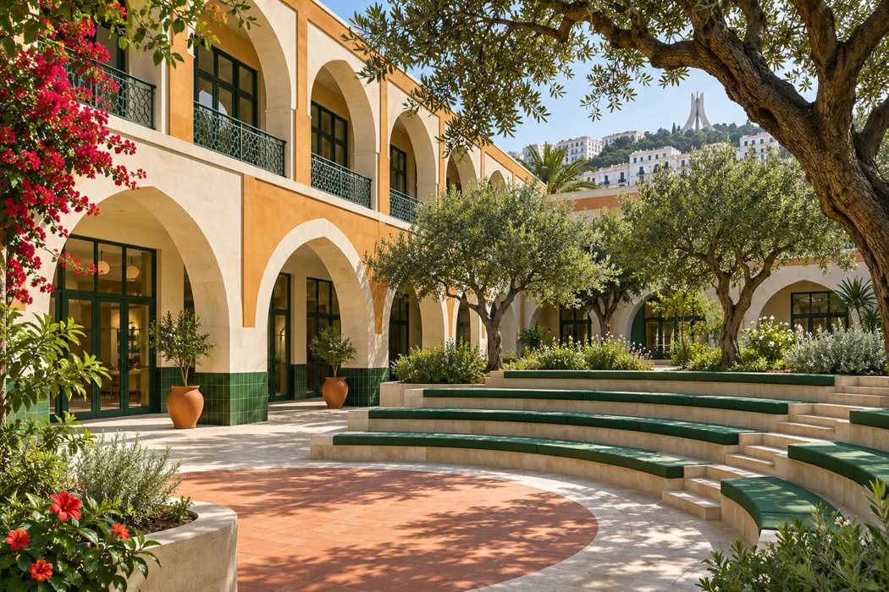

Admissions et visites
Sélectionnez un cycle et prévisualisez une demande de visite.
DécouvrirÉcole privée · Alger
Le bon point de départ dépend de votre besoin. Retrouvez les parcours et les informations à préparer pour une visite.
Préparer une visite
Sélectionnez un cycle et prévisualisez une demande de visite.
DécouvrirComparez les objectifs des quatre cycles avant votre visite.
DécouvrirDigital Atelier réalise des sites bilingues et des parcours d’admission adaptés à votre établissement.
Découvrir